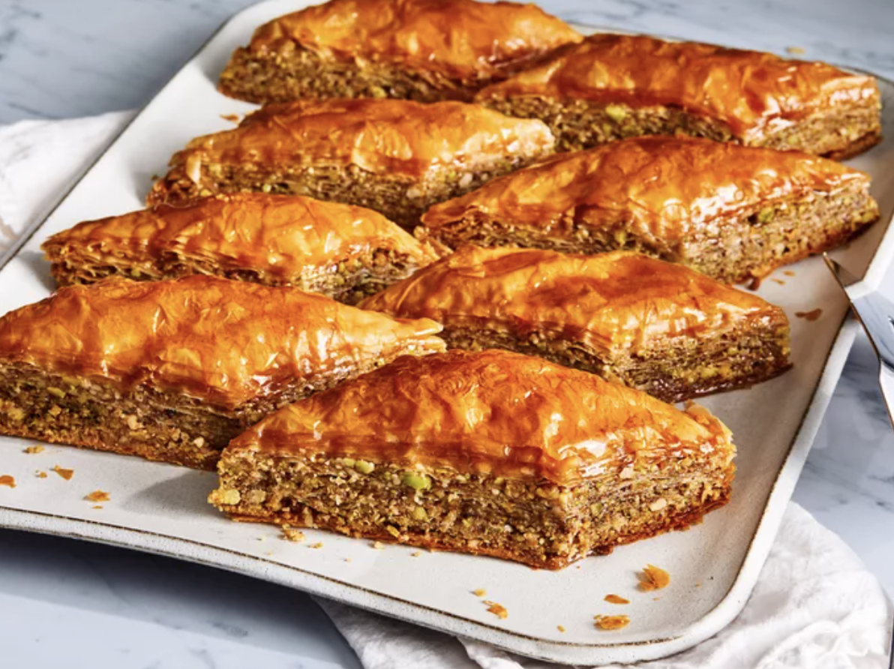

Home
Greek Baklava

Description
Baklava is a delicious Greek pastry dessert made up of layers of crispy phyllo dough, chopped nuts, and honey syrup that's so easy to make. A Greek friend showed me how to make this fabulous recipe.
Ingredients
- Phyllo Dough
- Nuts
- Butter
- Cinnamon
- Water, Sugar, Vanilla, and Honey
Steps
- Stack eight sheets of phyllo dough, brushing with melted butter between each layer, to create a sturdy base. Sprinkle it with a mixture of chopped nuts and cinnamon. Top with two sheets of phyllo dough and follow with the nut mixture. Repeat this process a few more times, until the nut mixture is gone. Top with about eight more layers of phyllo, buttering each layer.
- Cut the baklava into diamond or square shapes. Be sure to cut all the way to the bottom of the pan. Bake until golden and crisp.
- Boil water and sugar until sugar is melted. Add vanilla and honey. Remove the baklava from the oven and immediately pour syrup over it. Let cool before serving.